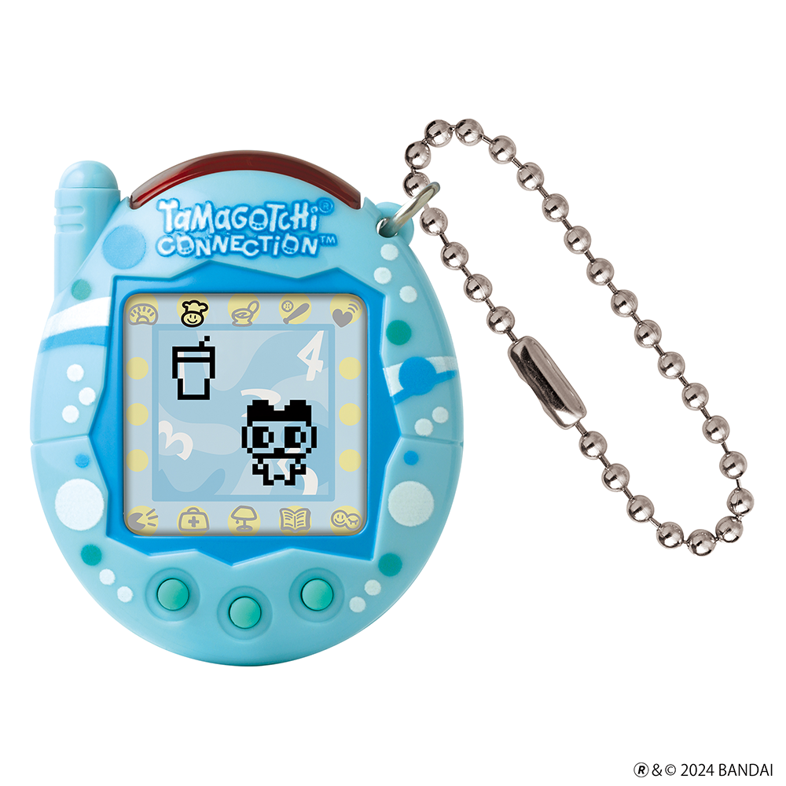

Tamagotchi Connection Bubbles
$73.90
The Original Virtual Reality Pet with Connection Play! A classic shell from the 2000s. A shell bursting with fresh blue bubbles! Includes password for a SODA for your character!
Tamagotchi Connection is an interactive virtual pet that grows differently depending on how well you take care of your Tamagotchi character. Play games with it, feed it food, and cure it when it is sick, and it will develop into a good companion!
Tamagotchi characters can connect with others to make friends, play games, and exchange gifts! Get married and raise generations of Tamagotchi characters!
Tamagotchi Connection has some exciting features! Nurture your Tamagotchi character and meet more than 50 characters! Play over 10 mini games to make your character happy or earn Gotchi Points! Collect more than 150 items! Buy new food and other items using Gotchi Points for your Tamagotchi character. Find passwords to unlock special items!
Battery (CR2032) included. Age 6+
